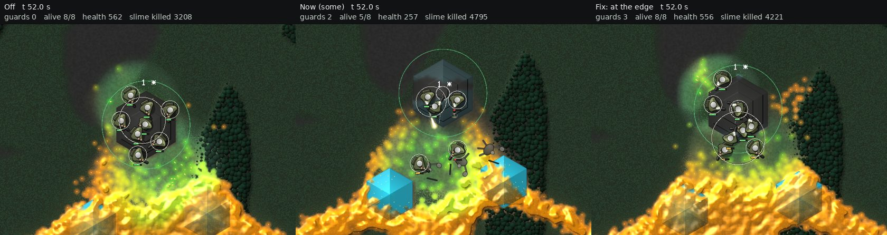

<title>Squad Guards Review</title>
<meta name="claude:viewport-fit-sides" content="cover">
<style>
/* Layout: one reading column; the film runs full width above the counts. */
:root{--bg:#f3f5f2;--fg:#1c2420;--muted:#5a6660;--line:#d3dad5;--accent:#2f7d5b;--bad:#b0452f;--card:#ffffff;
--display:"Space Grotesk",system-ui,sans-serif;--body:"Inter",system-ui,sans-serif}
@media (prefers-color-scheme:dark){:root:not([data-theme="light"]){--bg:#121715;--fg:#e3e9e5;--muted:#9aa7a0;--line:#2c3631;--accent:#6cc79c;--bad:#e3836c;--card:#1a211e;color-scheme:dark}}
:root[data-theme="dark"]{--bg:#121715;--fg:#e3e9e5;--muted:#9aa7a0;--line:#2c3631;--accent:#6cc79c;--bad:#e3836c;--card:#1a211e;color-scheme:dark}
body{background:var(--bg);color:var(--fg);font-family:var(--body);line-height:1.55;padding-left:max(16px,env(safe-area-inset-left,0px));padding-right:max(16px,env(safe-area-inset-right,0px));padding-block:28px}
main{max-width:1000px;margin:0 auto;display:grid;gap:22px}
h1,h2{font-family:var(--display);text-wrap:balance;margin:0}
h1{font-size:1.9rem}h2{font-size:1.25rem}
p{margin:0;max-width:68ch}
.lead{color:var(--muted)}
video,img{width:100%;border-radius:6px;border:1px solid var(--line);background:#000}
.verdict{border-left:4px solid var(--accent);background:var(--card);padding:14px 16px;border-radius:4px}
.wrap{overflow-x:auto}
table{border-collapse:collapse;font-variant-numeric:tabular-nums;font-size:.9rem;min-width:620px;width:100%}
th,td{padding:5px 8px;border-bottom:1px solid var(--line);text-align:right}
th:nth-child(-n+2),td:nth-child(-n+2){text-align:left}
th{color:var(--muted);font-weight:600}
tr.was td:nth-child(2){color:var(--bad)} tr.now td:nth-child(2){color:var(--accent);font-weight:600}
ul{margin:0;padding-left:1.2em;display:grid;gap:4px;max-width:70ch}
code{font-size:.88em}
</style>
<link rel="stylesheet" href="https://fonts.googleapis.com/css2?family=Inter:wght@400;600&family=Space+Grotesk:wght@600&display=swap">
<main>
<h1>Guards while working</h1>
<p class="lead">Your ask: "Have someone review the guards while harvesting option. It doesn't seem to work well. Either improve it or remove it." Eight soldiers drain a crystal by hand with slime to the south, 60 seconds, the Fork map.</p>

<div class="verdict"><p><strong>What was wrong:</strong> guards walked up to 8 cells past the crystal, out into the slime's thin film, alone and outside the squad. They got bitten and died, and the workers were bitten about as much as with no guards. <strong>Fix:</strong> guards now stand at the crystal's edge on the slime side, as the squad's front. Same key (I), same button, same none/some/more.</p></div>

<h2>Side by side, seed 4</h2>
<p class="lead">Left: guards off. Middle: guards as they were (some). Right: guards at the edge (the fix). Counts above each are the game's own at that second.</p>
<video src="guards-compare.mp4" controls muted loop playsinline autoplay></video>
<p class="lead">At 52 s: the old guards are down in the film and 3 soldiers are dead; the edge squad still has all 8 and has killed more slime than guards off.</p>


<h2>Counts, 4 seeds</h2>
<div class="wrap"><table>
<thead><tr><th>seed</th><th>guards</th><th>alive at 60 s</th><th>health (of 800)</th><th>slime killed</th><th>workers bitten (s)</th><th>guards bitten (s)</th></tr></thead>
<tbody>
<tr><td>1</td><td>off</td><td>8</td><td>629</td><td>2627</td><td>49</td><td>0</td></tr>
<tr class="was"><td>1</td><td>out (was)</td><td>7</td><td>396</td><td>3262</td><td>56</td><td>57</td></tr>
<tr class="now"><td>1</td><td>edge (now)</td><td>7</td><td>483</td><td>3413</td><td>46</td><td>48</td></tr>
<tr><td>2</td><td>off</td><td>8</td><td>712</td><td>952</td><td>45</td><td>0</td></tr>
<tr class="was"><td>2</td><td>out (was)</td><td>8</td><td>689</td><td>1004</td><td>20</td><td>33</td></tr>
<tr class="now"><td>2</td><td>edge (now)</td><td>8</td><td>708</td><td>1041</td><td>12</td><td>23</td></tr>
<tr><td>3</td><td>off</td><td>8</td><td>614</td><td>1551</td><td>61</td><td>0</td></tr>
<tr class="was"><td>3</td><td>out (was)</td><td>7</td><td>477</td><td>3571</td><td>44</td><td>39</td></tr>
<tr class="now"><td>3</td><td>edge (now)</td><td>8</td><td>511</td><td>3106</td><td>50</td><td>42</td></tr>
<tr><td>4</td><td>off</td><td>8</td><td>507</td><td>4003</td><td>74</td><td>0</td></tr>
<tr class="was"><td>4</td><td>out (was)</td><td>5</td><td>219</td><td>5265</td><td>53</td><td>75</td></tr>
<tr class="now"><td>4</td><td>edge (now)</td><td>8</td><td>518</td><td>4905</td><td>48</td><td>31</td></tr>
</tbody></table></div>
<ul>
<li>Old guards against off: less health on 4 of 4 seeds, 5 soldiers dead against 0.</li>
<li>Edge guards against old guards: more health on 4 of 4, 1 dead against 5.</li>
<li>Edge guards against off: a third more slime killed (4 of 4), workers bitten less (4 of 4), a little less health (3 of 4), 1 dead against 0.</li>
<li>The crystal drained the same in every case. With pumps now the main income, a pump goes up in 2 to 6 seconds, so guards only matter for a moment there.</li>
<li>Four seeds is a look, not a census (4 of 4 is p 0.125).</li>
</ul>
<p class="lead">Why keep it rather than remove it: at the edge it now gives a trade you can see (more kills, fewer bites on the workers, a little health). If it still feels pointless in play, removing it is a small change.</p>
</main>
